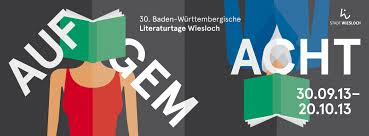
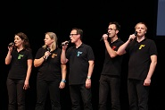
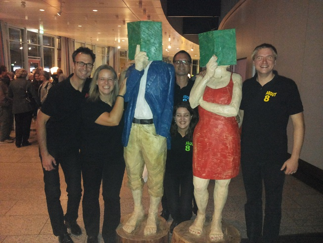
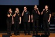
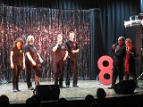
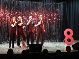

13. Dezember 2013:Weihnachtssingen im Haus Kurpfalz in Wiesloch 18:30 Uhr
30. September 2013:Eröffnung der Baden Württembergischen Literaturtage Palatin in Wiesloch 20:00 Uhr




18. Juli 2013:Haus Kurpfalz in Wiesloch19:00 Uhr
14. Juli 2013: Evangelische Kirche in Gaiberg (gau-gai-go.de) „@ cappella - Liebe und Cyberspace“Anfang 19:30
Presse zu dem letzten Programm „Liebe und Cyberspace“

7. Juli 2013: Stadtfest in Wiesloch16:30 - 18:00 Städtische Bühne auf dem Evangelischen Kirchplatz
1. Juni 2013: (privat) Geburtstagsfeier
27. April 2013: (privat) Geflügelparty
20. April 2013: Stimmfest in St. Leon Rot

